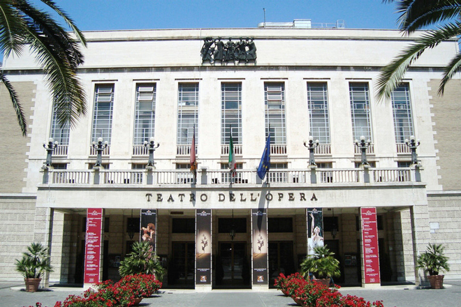
While it wasn't exactly snowing when we came to Rome, it was about as cold as I had ever been. I'd come with my colleague, Shirley, for a performance of Berlioz's opera Benvenuto Cellini at the Rome Opera.
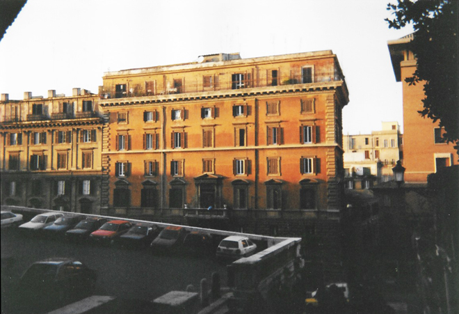
Scrambling around to try and see as much of the ancient city centre in a very short period, we found the church of San Pietro in Vincoli (Saint Peter in Chains), best known for being the home of Michelangelo's statue of Moses, part of the tomb of Pope Julius II.
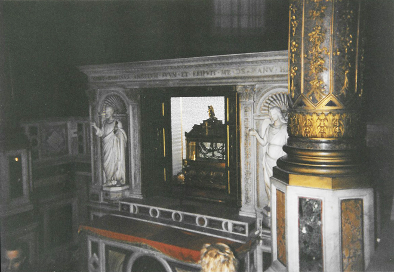
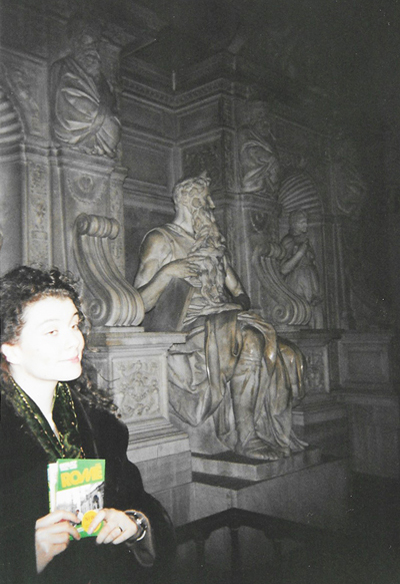
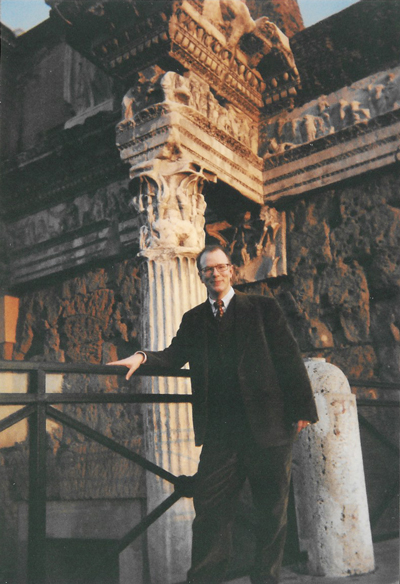
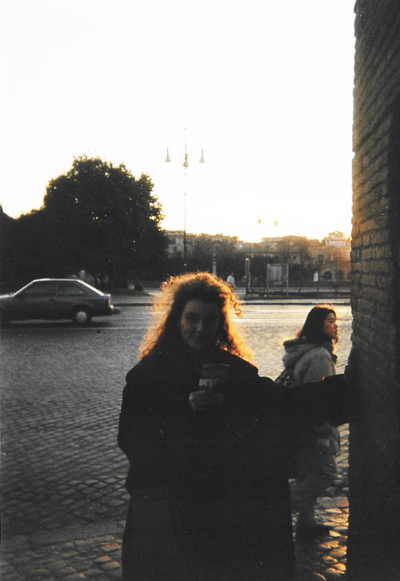
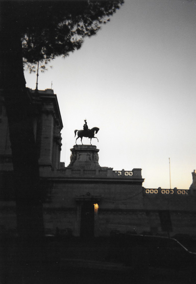
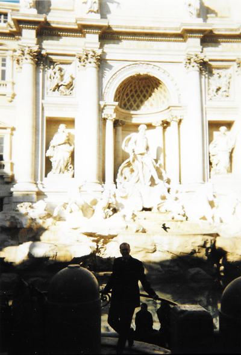
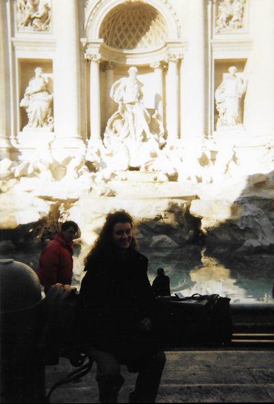
A quick flit to the Trevi Fountain in the bright winter sunshine. We WERE there - even only if in silhouette!
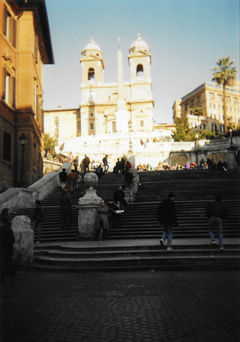
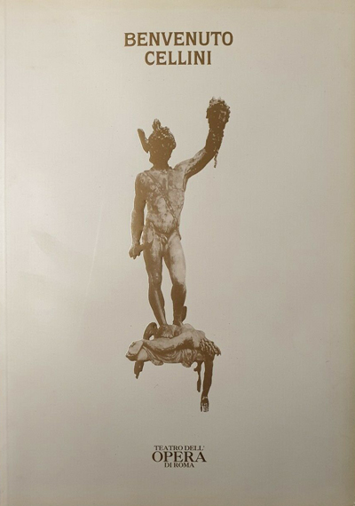
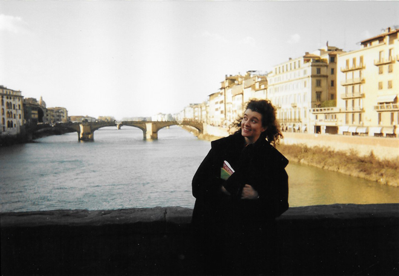
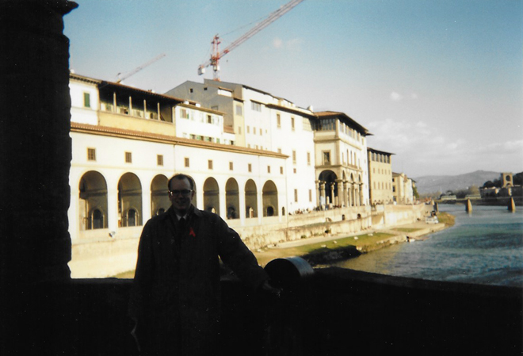
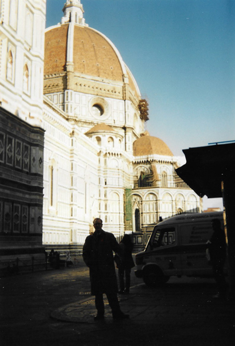
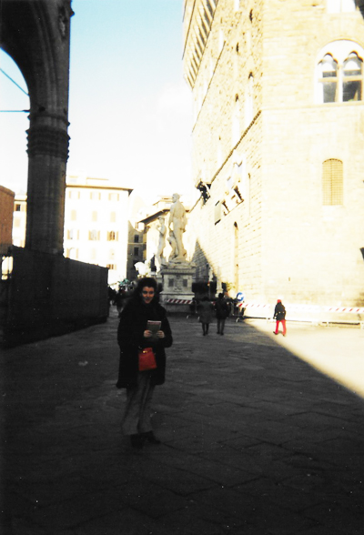
The Duomo (above left), the Palazzo Vecchio (above right) and the Church of Santa Maria Novella (below).
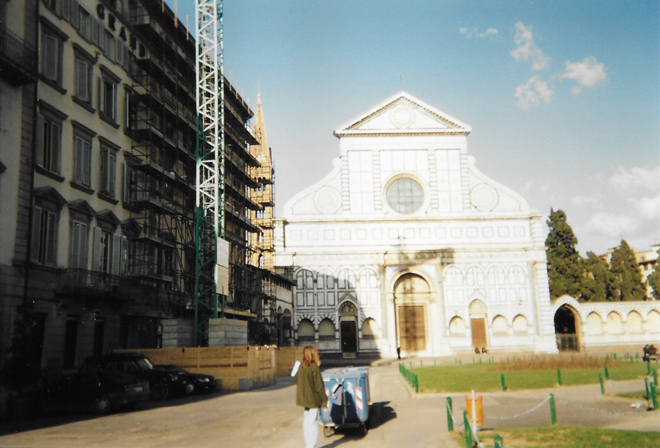
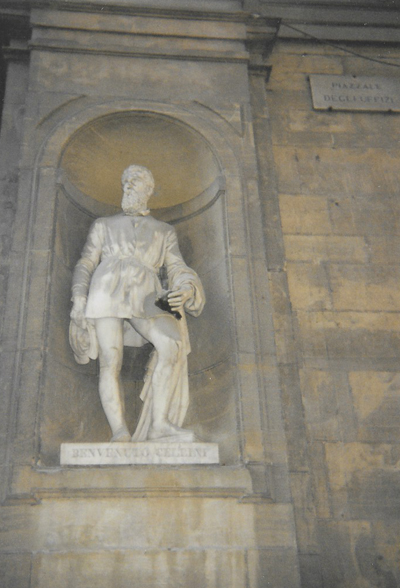
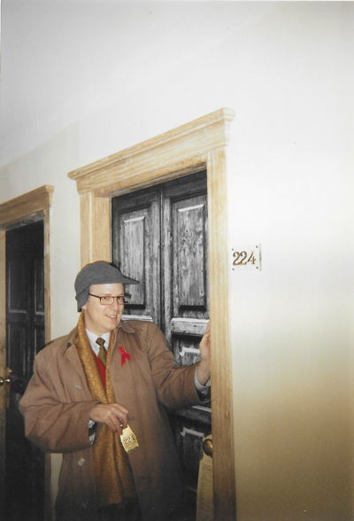
There is a life-size statue of the sculptor and jeweller Benvenuto Cellini in a niche outside the Uffizi Galleries.
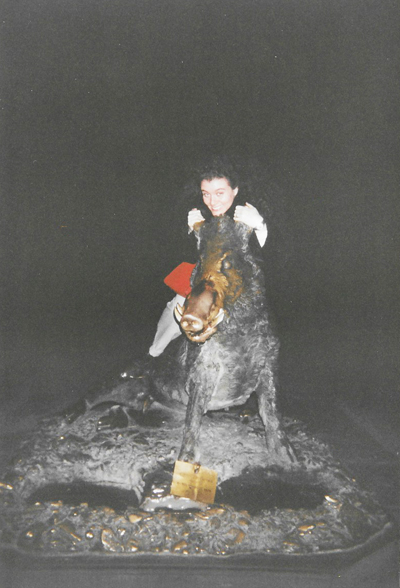
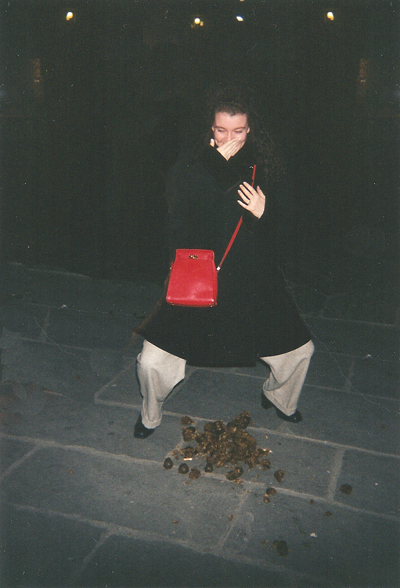
After the afternoon concert, Shirley and I were free to go out to dinner. We walked back to the hotel after this and had a bit of fun along the way with Il Porcellino ("piglet") a bronze copy of a cast by Pietro Tacca (1577–1640) made about 1634. Tacca's bronze was originally intended for the Boboli Gardens.
Visitors to Il Porcellino put a coin into the boar's gaping jaws, with the intent to let it fall through the underlying grating for good luck, and they rub the boar's snout to ensure a return to Florence, a tradition that the Scottish literary traveller Tobias Smollett noted in 1766, which has kept the snout in a state of polished sheen while the rest of the boar's body has patinated to a dull brownish-green ...
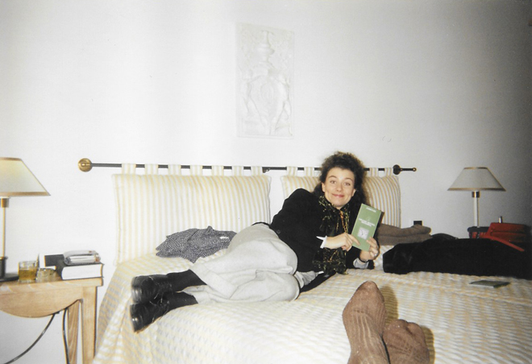
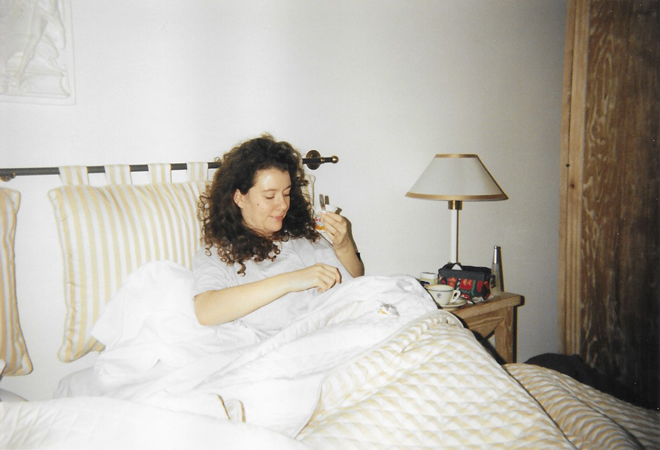